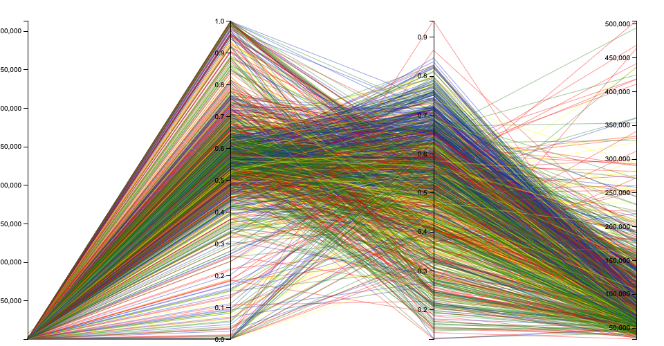

For this homework assignment, you must visualize dataset with basic visualization techniques using Tableau Desktop and D3.js (version 5).
Parallel Coordinate Visualization
In this assignment, created a multivariant visualization using D3.js. Used Parallel Coordinate, which helps data visualizing in high-dimensional geometry.
Created Prototype using Rawgraphs. It is similar to Tableau.
"This data is made available as part of our research studies, we put out publicly available datasets that can be used by other researchers and practitioners to support their own work. "
More detailed information can be found on Data License link.
These are columns in Dataset, but I have used only four columns out of it for parallel line and one to differentiate by color
name: Name of college (or college group Name).
type:Type:
1 = public
2 = private non-profit
3 = for-profit
state: State
cz: Commuting zone ID
czname: Commuting zone name
cfips: Combined state and county fips code
county: County
multi: Indicator that equals 1 if multiple colleges (IPEDS Unit IDs) are grouped in this Super OPEID
region:Census region:
1 = Northeast
2 = Midwest
3 = South
4 = West
count: Average number of kids per cohort.
female: Fraction female among kids
k_married: Fraction of kids married in 2014
par_mean: Mean parental income
These are few columns in dataset.
Wrangling
For this visualization, filtered dataset where column count <= 500 and par_mean <= 60000.This reduce row count to 1233 from 2203 records. Used excel to filter dataset to required format.
Modified dataset which has only few columns which are count, female, k_married, par_mean and region in it.
Multivariant Visualizations
Prototype

Visualization in D3.js
Caption:
Graph shows records over different regions (with different colors) with respesct to count of count and par_mean and percentage of female, k_married.
Conclusion
This visualization is made using D3. It has dataset from Mobility Report Cards: The Role of Colleges in Intergenerational Mobility. It is modified and reduced in size to remove outliers from it. Each different color line are rows in dataset.
It encodes students from different region.
From this visualization, can conclude that there a lot kids from cohort in Midwest are female student. Out of those a lot of them are married. These married female can be parents whose income are very less.
Also students from South are married whose parents have mean income very low. It could be because there might be less IT jobs or may be due to overall population. Female students have less salary compared to male.